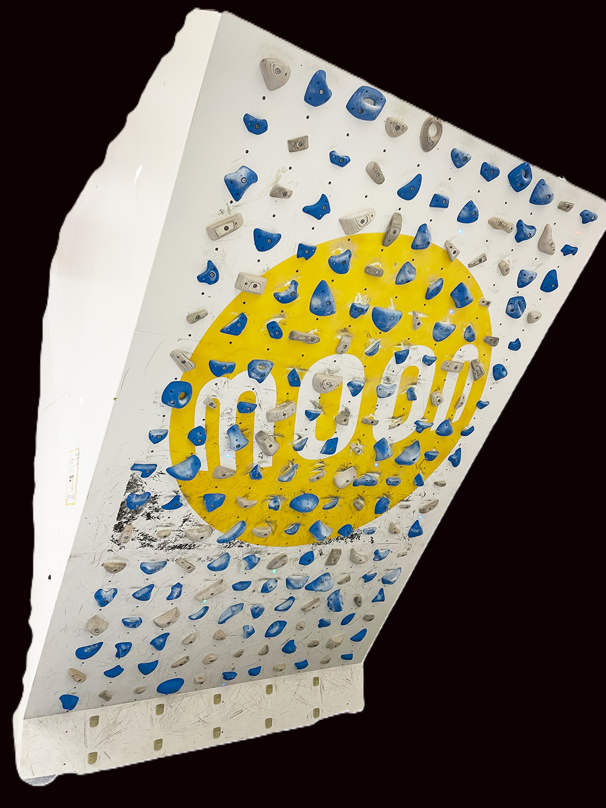

Technological Standard 2024
MOON BOARD
به دنیای هوشمند سنگنوردی خوش آمدید. نسخه 2024 مونبورد با زاویه تندتر، گیرههای جدید سری Wood و سیستم LED یکپارچه، مرزهای توانایی شما را جابجا میکند. این فقط یک دیواره نیست؛ یک شبکه جهانی از مسیرهای حرفهای است.
۴۰ درجه
زاویه استاندارد
۱۰۰K+
مسیر در اپلیکیشن

New 2024 Setup
01. اتصال هوشمند
اتصال فوری از طریق بلوتوث به اپلیکیشن Moon Climbing جهت انتخاب و نمایش مسیرها با LED.
02. گیرههای جدید
شامل پکیج کامل گیرههای ۲۰۲۴ که توسط بن مون برای به چالش کشیدن استقامت طراحی شدهاند.
03. دیتابیس جهانی
دسترسی به هزاران مسئله (Problem) از سنگنوردان سراسر جهان در سطوح مختلف.